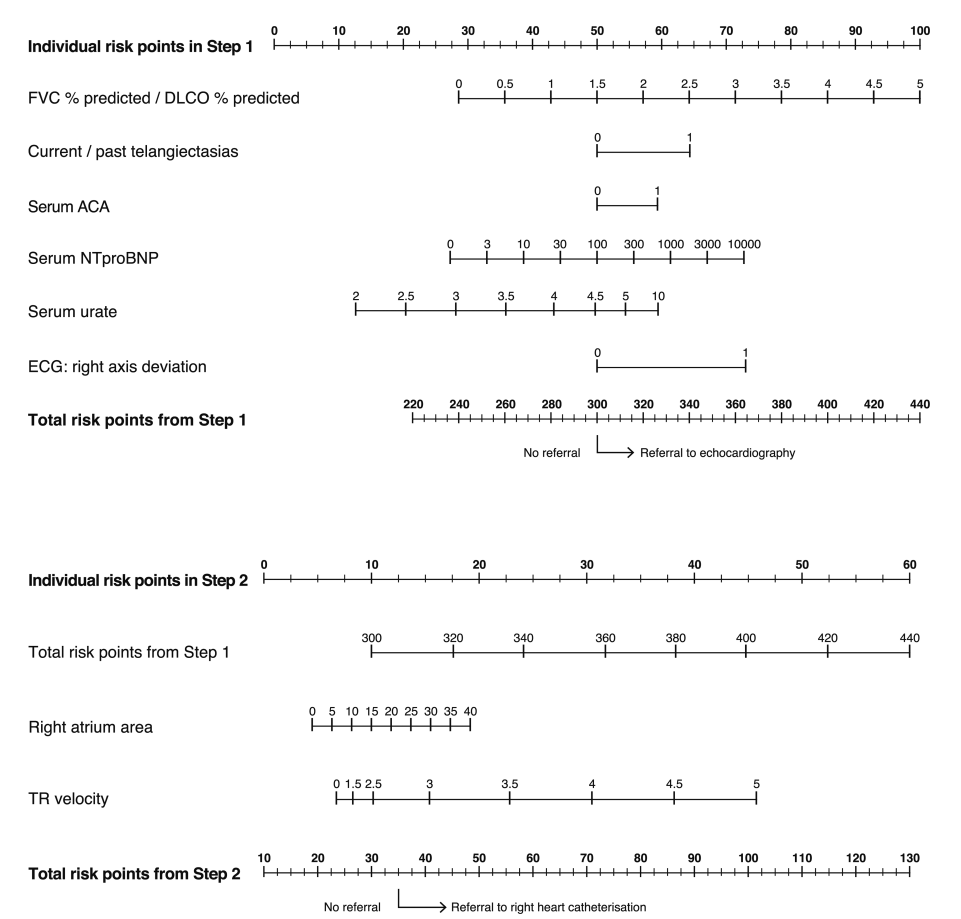

Étape 1 : Évaluation Clinique
Capacité Vitale Forcée
Capacité de Diffusion
Physio-Engine DETECT
Moteur Physique
Visualisation Hémodynamique
Variables DETECT Live
Vélocité IT (Jet)
-- m/s
Reflet direct de (PAPs - POD)
Surface OD
-- cm²
Dilatation sous pression
NT-proBNP
-- pg/mL
Marqueur de stress pariétal
Score DETECT Simulé
--
--
Source du Calcul
L'algorithme DETECT est basé sur le nomogramme validé dans l'étude princeps.

Référence :
Coghlan JG, Denton CP, Grünig E, et al.
Evidence-based detection of pulmonary arterial hypertension in systemic sclerosis: the DETECT study.
Ann Rheum Dis 2014;73:1340–1349.
Coghlan JG, Denton CP, Grünig E, et al.
Evidence-based detection of pulmonary arterial hypertension in systemic sclerosis: the DETECT study.
Ann Rheum Dis 2014;73:1340–1349.
Note : Ce calculateur en ligne reproduit fidèlement les points attribués par ce nomogramme pour chaque variable, assurant une concordance parfaite avec la méthode papier.